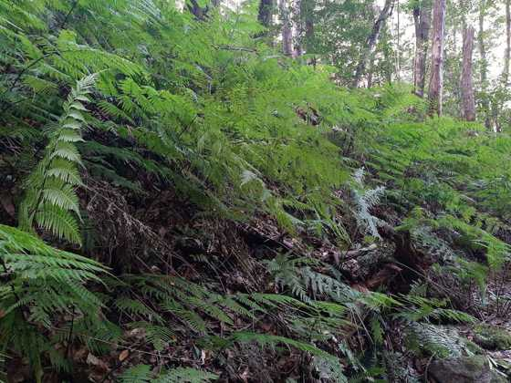
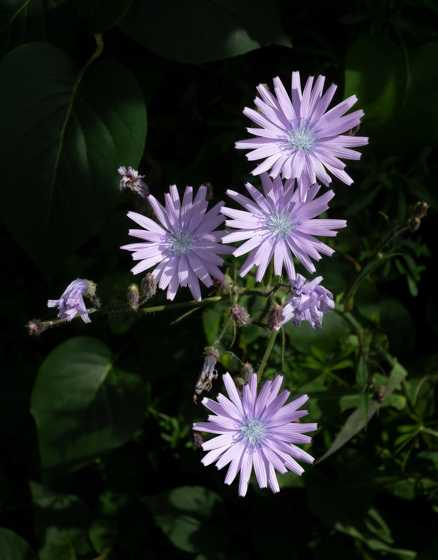
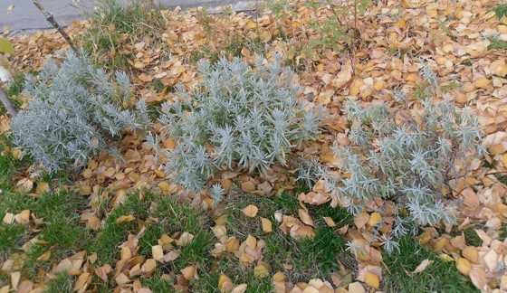

コーヒー・お飲み物
詳細は準備中

山野草園の敷地内のカフェ
草花のそばで、細かいことは云々せず、ひと息つく。
京都府南丹市日吉町
Cafe 云々(うんぬん)は、京都府南丹市日吉町にある、山野草園の敷地内のカフェです。お店のInstagramでは「山野草園内にカフェができました。」と紹介されています。
草や花に囲まれた場所で、コーヒーや軽食でひと休みする。そんな過ごし方を思い浮かべながら、このページを作りました。
「云々」という店名の由来は確認できていません。ここでの「細かいことは云々せず、ひと息つく」という言い回しは、制作側のイメージです。





お店のInstagramによると、ランチや軽食の提供があるようです。内容・価格などの詳細は準備中です。
詳細は準備中

詳細は準備中

詳細は準備中

詳細は準備中


以下は制作側が作成したイメージ例で、実在のお客様の声ではありません。
庭の緑を眺めながらいただくコーヒーが、とても落ち着きました。ゆっくり過ごせる場所です。
イメージ例 / 散歩の途中に
花を見たあとに、ひと休みできるカフェがあるのは嬉しいですね。軽食もちょうどよい量でした。
イメージ例 / ご家族で
窓の外の景色がきれいで、つい長居してしまいました。また季節を変えて訪れたいです。
イメージ例 / 一人時間に

掲載の写真はフリー素材によるイメージで、店舗の実際の様子ではありません。